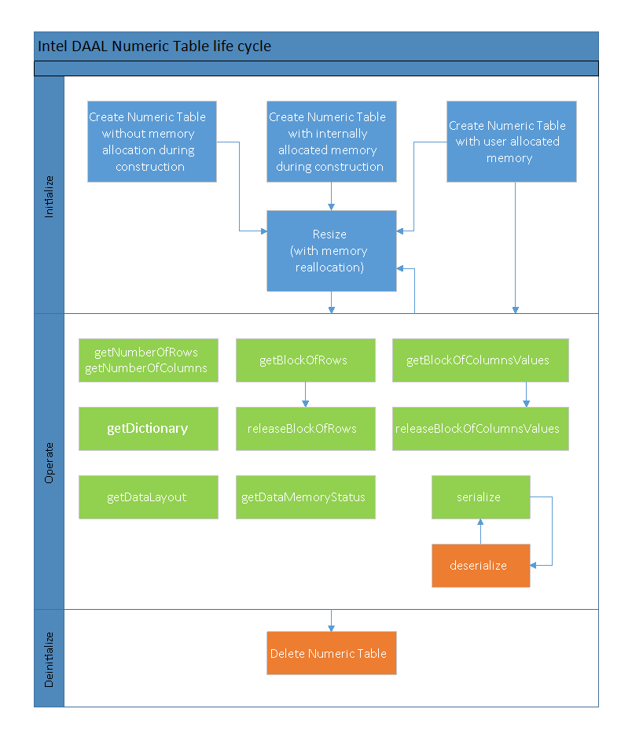

Generic Interfaces¶
Numeric tables provide interfaces for data management, such as memory allocation and deallocation, and respective memory access methods, dictionary management, and table size management.
The life cycle of a numeric table consists of the following major steps:
Initialize
Operate
Deinitialize
The following diagram shows possible flows and transitions between the states of the numeric table for each step. The description of these steps applies to different types of numeric tables supported in the library, such as CSR, with appropriate changes in the method names and respective arguments.
{kind=link}
Initialize¶
A data dictionary is associated with numeric table over its whole life cycle. If the dictionary is not explicitly provided by the user during initialization, it is automatically constructed using the parameters provided to the constructor of the numeric table.
If you need to modify the numeric table dictionary by changing, for example, the number of attributes (that equals to the number of columns in the table), create another instance of the numeric table to work with the data. Modification of the dictionary via respective methods for the existing and initialized numeric table does not imply re-allocation of the internal data structures of the numeric table and can result in unpredicted behavior of the application.
oneDAL provides several constructors for numeric tables to cover a variety of table initialization scenarios. The constructors require the numbers of rows and columns for the table or a dictionary. If you do not have the dictionary or sizes of the numeric table at the time of construction, you can use the constructor with default values and sizes. The following scenarios are available for use of constructors:
If the table size is unknown at the time of object construction, you can construct an empty table and change the size and allocate the memory later. You can also use the constructor to specify the sizes, but provide a pointer to the memory later:
HomogenNumericTable<float> table(nColumns, nRows, NumericTable::doNotAllocate); float data[nColumns * nRows]; table.setArray(data, nRows);
If the table size is known but the data is not yet in memory, oneDAL can allocate the memory automatically at the time of object construction and even initialize the memory, that is, allocate the matrix with zero elements:
HomogenNumericTable<float> table(nColumns, nRows, NumericTable::doAllocate, 0.0);
If the data is already available in memory by the time of object construction, you can provide a pointer to this data through the appropriate constructor:
float data[nColumns * nRows]; HomogenNumericTable<float> table(data, nColumns, nRows);
To allocate or reallocate the memory after construction of the numeric table, use service methods:
resize().
This method modifies the number of rows in the table according to the provided parameter and operates according to the description below:
If a memory buffer for the numeric table is not allocated, this method allocates memory of the respective size for the table.
If a memory buffer for the numeric table is allocated by the library and the number of rows passed to the function requires a larger memory buffer, the method deallocates it and allocates a new buffer of the respective size.
If a memory buffer for the numeric table is provided by the user and the number of rows passed to the function requires a larger memory buffer, the method internally allocates a new buffer of the respective size. The memory buffer provided by the user is not deallocated by the library in this case.
Otherwise, the method modifies the respective number of rows in the internal data structures.
Operate¶
After initialization or re-initialization of a numeric table, you can use the following methods for the numeric table to access the data:
getBlockOfRows() and releaseBlockOfRows().
The getBlockOfRows() method provides access to a data block stored in the numeric table. The rwflag argument specifies read or write access. Provide the object of the BlockDescriptor type to the method to interface the requested block of rows. This object, the block descriptor, represents the data in the contiguous raw-major layout with the number of rows specified in the method and number of columns specified in the numeric table.
In oneDAL you can represent the data in the block descriptor with the data type different from the data type of the numeric table. For example: you can represent a homogeneous data with the float data type, while the block descriptor represents the requested data in double. You can specify the required data type during the construction of the block descriptor object. Make sure to call the releaseBlockOfRows() method after a call to getBlockOfRows(). The data types of the numeric table and block descriptor, as well as the rwflag argument of the getBlockOfRows() method, define the behavior of releaseBlockOfRows():
If rwflag is set to writeOnly or readWrite, releaseBlockOfRows() writes the data from the block descriptor back to the numeric table.
If the numeric table and block descriptor use different data types or memory layouts, releaseBlockOfRows() deallocates the allocated buffers regardless of the value of rwflag.
HomogenNumericTable<double> table(data, nColumns, nRows); BlockDescriptor<float> block; table.getBlockOfRows(firstReadRow, nReadRows, readOnly, block); float *array = block.getBlockPtr(); for (size_t row = 0; row < nReadRows; row++) { for (size_t col = 0; col < nColumns; col++) { std::cout << array[row * nColumns + col] << " "; } std::cout << std::endl; } table.releaseBlockOfRows(block);
getBlockOfColumnValues() and releaseBlockOfColumnValues().
These methods provide access to values in the specific column of a numeric table, similarly to getBlockOfRows() and releaseBlockOfRows().
getNumberOfRows() and getNumberOfColumns().
Call these methods to determine the number of rows and columns, respectively, associated with a given numeric table.
getDictionary() and resetDictionary(), as well as getFeatureType() and getNumberOfCategories().
These methods provide access to the data dictionary associated with a given numeric table. See Data Dictionaries for more details.
getDataMemoryStatus().
Call this method to determine whether the memory is allocated by the allocateDataMemory() method, a user provided a pointer to the allocated data, or no data is currently associated with the numeric table. Additionally, the getArray() method is complimentary to setArray() and provides access to the data associated with a given table of a given layout.
serialize and deserialize().
The serialize() method enables you to serialize the numeric table. Call the deserialization method deserialize() after each call to serialize(), but before a call to other data access methods.
Deinitialize¶
After you complete your work with a data resource, the appropriate memory is deallocated implicitly in the destructor of the numeric table.
Note
If the library internally allocates or reallocates the memory buffers for the data inside the numeric table, do not use the pointer returned by the getArray() method of the numeric table after its destruction.
The default data type for a homogeneous numeric table is float.
Python*: When creating a numpy array from a numeric table, make sure that a reference to the numeric table exists as long as a reference to the derived numpy array is being used.